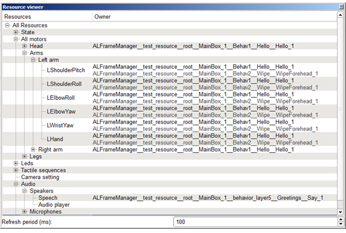

The Resource viewer panel basically enables you to see which resources are locked by which box, also known as modules, when using the Resource Manager.
| Column | Contains |
|---|---|
| Resources | List of all resources available on the robot. |
| Owner |
|
The Resource viewer panel is getting periodically information directly from the robot, by request.
Setting the refresh period allows the user to set the time to wait between two requests.